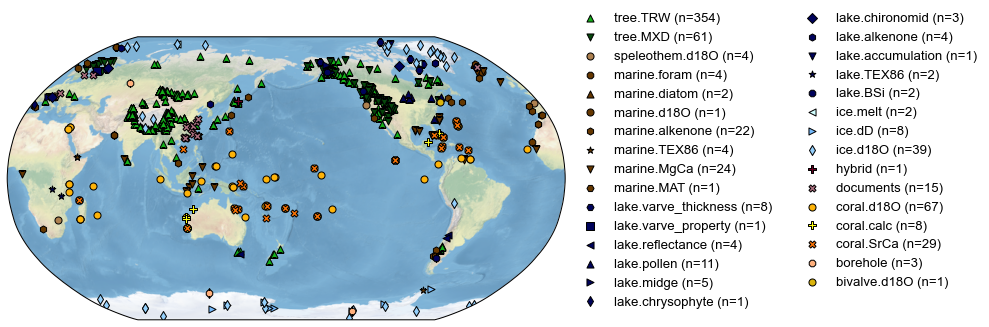
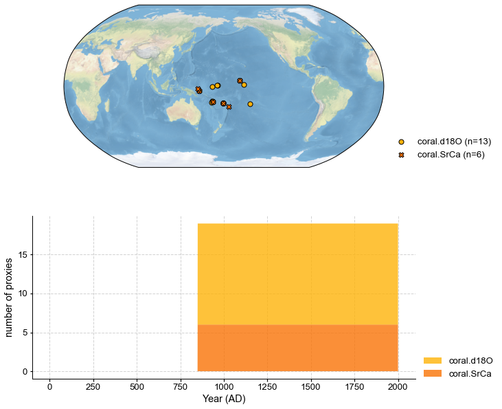

Pseudoproxy experiments with LMR and PAGES2k
Contents
Pseudoproxy experiments with LMR and PAGES2k#
This notebook illustrates how to perform pseudoproxy experiments with cfr. We focus here on a small domain in the tropical Pacific using the PAGES 2k pseudoproxy network of Zhu et al, Scientific Data (2022). This application using the Last Millennium Reanalysis framework (Hakim et al. 2016; Tardif et al. 2019), aka LMR.
[1]:
%load_ext autoreload
%autoreload 2
import cfr
import pandas as pd
import numpy as np
Create a reconstruction job object#
[2]:
job = cfr.ReconJob(verbose=True)
print(job)
>>> job.configs:
{}
<cfr.reconjob.ReconJob object at 0x1117d3280>
Load a proxy database#
The proxy database contains pseudoproxies generated from an iCESM simulation, with SNR=10, hence almost noiseless.
[16]:
job.proxydb = pd.read_pickle('./data/pseudoPAGES2k/pseudo.tpn_SNR10.pkl')
# the .plotly() method will generate an interactive map so that we are able to
# check the proxy ID and location information of each site.
job.proxydb.plot()
[16]:
(<Figure size 720x720 with 1 Axes>, {'map': <GeoAxesSubplot:>})

Filter the proxy database#
[4]:
job.proxydb = job.proxydb.filter(by='loc-square', keys=(-20, 20, 150, 250))
# the .plot() method will generate a static map utilizing the Cartopy library
fig, ax = job.proxydb.plot(plot_count=True)

Load climate model priors#
[5]:
job.load_clim(
tag='prior',
path_dict={
# 'tas': './data/tas_sfc_Amon_CCSM4_past1000_085001-185012.nc',
'tas': './data/tas_CCSM4_cropped.nc',
},
anom_period=(1951, 1980),
verbose=True,
)
>>> job.configs["prior_path"] = {'tas': './data/tas_CCSM4_cropped.nc'}
>>> job.configs["prior_anom_period"] = (1951, 1980)
>>> job.configs["prior_lon_name"] = lon
>>> job.configs["prior_time_name"] = time
>>> The time axis does not overlap with the reference period (1951, 1980); use its own time period as reference [850.00, 1850.92].
>>> prior variables ['tas'] loaded
>>> job.prior created
[6]:
job.load_clim(
tag='obs',
path_dict={
'tas': './data/tas_sfc_Amon_iCESM_past1000historical_085001-200512.nc',
},
anom_period=(1951, 1980),
verbose=True,
)
>>> job.configs["obs_path"] = {'tas': './data/tas_sfc_Amon_iCESM_past1000historical_085001-200512.nc'}
>>> job.configs["obs_anom_period"] = (1951, 1980)
>>> job.configs["obs_lon_name"] = lon
>>> job.configs["obs_time_name"] = time
>>> obs variables ['tas'] loaded
>>> job.obs created
Calibrate the PSMs#
[7]:
ptype_psm_dict = {
'coral.d18O': 'Linear',
'coral.SrCa': 'Linear',
}
ptype_season_dict = {
'coral.d18O': list(range(1, 13)),
'coral.SrCa': list(range(1, 13)),
}
job.calib_psms(
ptype_psm_dict=ptype_psm_dict,
ptype_season_dict=ptype_season_dict,
calib_period=(1750, 1850),
verbose=True,)
>>> job.configs["ptype_psm_dict"] = {'coral.d18O': 'Linear', 'coral.SrCa': 'Linear'}
>>> job.configs["ptype_season_dict"] = {'coral.d18O': [1, 2, 3, 4, 5, 6, 7, 8, 9, 10, 11, 12], 'coral.SrCa': [1, 2, 3, 4, 5, 6, 7, 8, 9, 10, 11, 12]}
>>> job.configs["psm_calib_period"] = (1750, 1850)
Calibrating the PSMs: 100%|██████████████████████████████████████████████████████████████████████████████████████████████████████| 19/19 [00:04<00:00, 3.91it/s]
>>> 19 records tagged "calibrated" with ProxyRecord.psm created
[8]:
# check the fitting R-squared
print(job.proxydb.records['Ocn_098'].psm.calib_details['fitR2adj'])
# check the obs err matrix
print(job.proxydb.records['Ocn_098'].R)
0.988222683205155
0.006051024278397355
Forward the PSMs#
[9]:
job.forward_psms(verbose=True)
Forwarding the PSMs: 100%|███████████████████████████████████████████████████████████████████████████████████████████████████████| 19/19 [00:03<00:00, 5.29it/s]
>>> ProxyRecord.pseudo created for 19 records
Annualize/seasonalize the climate model prior#
[10]:
job.annualize_clim(tag='prior', verbose=True, months=list(range(1, 13)))
fig, ax = job.prior['tas'].plot(it=-1)
>>> job.configs["prior_annualize_months"] = [1, 2, 3, 4, 5, 6, 7, 8, 9, 10, 11, 12]
>>> Processing tas ...
>>> job.prior updated

[11]:
# job.regrid_clim(tag='prior', nlat=42, nlon=63, verbose=True)
# job.prior['tas'].da
[12]:
# job.crop_clim(tag='prior', lat_min=-20, lat_max=20, lon_min=150, lon_max=250, verbose=True)
# fig, ax = job.prior['tas'].plot(-1)
Data assimilation#
[13]:
job.run_da_mc(save_dirpath='./results/lmr-ppe-pages2k', recon_seeds=[1, 2], verbose=True)
>>> job.configs["recon_period"] = [0, 2000]
>>> job.configs["recon_loc_rad"] = 25000
>>> job.configs["recon_timescale"] = 1
>>> job.configs["nens"] = 100
>>> job.configs["recon_seeds"] = [1, 2]
>>> job.configs["assim_frac"] = 0.75
>>> job.configs["save_dirpath"] = ./results/lmr-ppe-pages2k
>>> job.configs["compress_params"] = {'zlib': True, 'least_significant_digit': 1}
>>> job.configs["output_full_ens"] = False
>>> job.configs["recon_sampling_mode"] = fixed
>>> seed: 1 | max: 2
KF updating: 100%|██████████████████████████████████████████████████████████████████████████████████████████████████████████| 2001/2001 [00:09<00:00, 221.74it/s]
>>> Reconstructed fields saved to: ./results/lmr-ppe-pages2k/job_r01_recon.nc
>>> seed: 2 | max: 2
KF updating: 100%|██████████████████████████████████████████████████████████████████████████████████████████████████████████| 2001/2001 [00:11<00:00, 178.40it/s]
>>> Reconstructed fields saved to: ./results/lmr-ppe-pages2k/job_r02_recon.nc
>>> DONE! Total time used: 0.39 mins.
Validation#
[14]:
res = cfr.ReconRes('./results/ppe-pages2k', verbose=True)
>>> recon.paths:
[]
[15]:
res.load(['tas', 'nino3.4'], verbose=True)
---------------------------------------------------------------------------
StopIteration Traceback (most recent call last)
File ~/opt/miniconda3/envs/cfr-env/lib/python3.9/site-packages/xarray/core/concat.py:220, in concat(objs, dim, data_vars, coords, compat, positions, fill_value, join, combine_attrs)
219 try:
--> 220 first_obj, objs = utils.peek_at(objs)
221 except StopIteration:
File ~/opt/miniconda3/envs/cfr-env/lib/python3.9/site-packages/xarray/core/utils.py:194, in peek_at(iterable)
193 gen = iter(iterable)
--> 194 peek = next(gen)
195 return peek, itertools.chain([peek], gen)
StopIteration:
During handling of the above exception, another exception occurred:
ValueError Traceback (most recent call last)
Input In [15], in <cell line: 1>()
----> 1 res.load(['tas', 'nino3.4'], verbose=True)
File ~/Documents/GitHub/cfr/cfr/reconres.py:67, in ReconRes.load(self, vn_list, verbose)
64 with xr.open_dataset(path) as ds_tmp:
65 da_list.append(ds_tmp[vn])
---> 67 da = xr.concat(da_list, dim='ens')
68 if 'ens' not in da.coords:
69 da.coords['ens'] = np.arange(len(self.paths))
File ~/opt/miniconda3/envs/cfr-env/lib/python3.9/site-packages/xarray/core/concat.py:222, in concat(objs, dim, data_vars, coords, compat, positions, fill_value, join, combine_attrs)
220 first_obj, objs = utils.peek_at(objs)
221 except StopIteration:
--> 222 raise ValueError("must supply at least one object to concatenate")
224 if compat not in _VALID_COMPAT:
225 raise ValueError(
226 f"compat={compat!r} invalid: must be 'broadcast_equals', 'equals', 'identical', 'no_conflicts' or 'override'"
227 )
ValueError: must supply at least one object to concatenate
[ ]:
da = job.obs['tas'].annualize().da
da = cfr.utils.geo_mean(da, lat_min=-5, lat_max=5, lon_min=np.mod(-170, 360), lon_max=np.mod(-120, 360))
ref_time = [t.year for t in da.time.values]
ref_value = da.values
ref_name = 'truth'
[ ]:
fig, ax = res.recons['nino3.4'].validate(ref_time, ref_value, ref_name).plot_qs()
ax.set_xlim(800, 2000)
[ ]:
stat = 'R2'
valid_fd = job.prior['tas'].validate(
job.obs['tas'].annualize(), stat=stat,
interp_direction='from-ref',
valid_period=(1750, 1850),
)
fig, ax = valid_fd.plot(
title=f'{stat}(prior, truth)',
projection='PlateCarree',
latlon_range=(-18, 18, 152, 248),
**valid_fd.plot_kwargs)
[ ]:
job.proxydb.filter(by='tag', keys=['calibrated']).plotly()
[ ]:
lats, lons, colors, markers, markersizes = {}, {}, {}, {}, {}
for pid, pobj in job.proxydb.filter(by='tag', keys=['calibrated']).records.items():
lats[pid] = pobj.lat
lons[pid] = pobj.lon
colors[pid] = cfr.visual.STYLE.colors_dict[pobj.ptype]
markers[pid] = cfr.visual.STYLE.markers_dict[pobj.ptype]
markersizes[pid] = 500
[ ]:
stat = 'R2'
valid_fd = res.recons['tas'].validate(
job.obs['tas'].annualize(), stat=stat,
valid_period=(1750, 1850),
interp_direction='from-ref',
time_name='year',
)
fig, ax = valid_fd.plot(
title=f'{stat}(posterior, truth)',
projection='PlateCarree',
latlon_range=(-18, 18, 152, 248),
site_lats=lats, site_lons=lons,
site_markersize=markersizes, site_marker=markers,
site_color=colors,
**valid_fd.plot_kwargs)
[ ]: